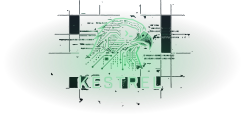

Context engineering for humans in an agentic multitasking world.
A GNOME Shell extension that gives each project its own workspace — agent, browser, files — in a scrollable strip you supervise at a glance.
You're supervising multiple AI agents across multiple projects. The idle time between interactions grows. Context-switching is the bottleneck. Your desktop can't keep up.
Alt-Tab through terminals, browsers, and editors scattered across projects. By the time you find the right window, you've lost context on everything else.
An agent needs approval. It stops and waits. You don't see the request for ten minutes. Everything stalls silently.
15+ windows across virtual desktops. No spatial logic. Agent terminals mixed with unrelated browsers. Every context-switch costs you time and mental energy.

Kestrel transforms your desktop into a scrollable workspace strip where each project's context lives together, agent status is always visible, and switching is effortless.
Each Claude Code window displays a real-time status indicator: working, needs-input, or done. You see the state of your entire fleet without switching a single window. Permission requests surface as overlay cards you can approve or deny inline.
Windows arrange in horizontal strips at half or full monitor width. Scroll left and right through your workspace. No manual resizing, no overlapping. The strip grows as you open windows and shrinks as you close them.
Workspaces stack vertically. Navigate up and down between contexts. Empty workspaces are pruned automatically. A fresh one is always waiting at the bottom. Name them for fast jumping via Ulauncher.
Hit the overview key to zoom out and see all workspaces, all windows, all agent statuses at once. Navigate with keyboard or click. Jump to any window instantly.
Multiple monitors combine into a single panoramic viewport. The strip flows seamlessly across screens. More monitors means more windows visible at once.
Navigate, move, resize, switch workspaces, toggle overview — all from the keyboard. Every binding is configurable via GSettings. Your hands never leave the home row.
Window positions, workspace assignments, and focus state persist across screen locks, extension restarts, and session recovery. Your spatial memory stays intact.
All keybindings are configurable via GSettings. Kestrel takes over the Super key — make disable restores all original GNOME bindings.
| Keybinding | Action |
|---|---|
| Super + → | Focus next window |
| Super + ← | Focus previous window |
| Super + ↓ | Switch to workspace below |
| Super + ↑ | Switch to workspace above |
| Super + - | Toggle overview |
| Keybinding | Action |
|---|---|
| Super + Shift + → | Move window right |
| Super + Shift + ← | Move window left |
| Super + Shift + ↓ | Move window to workspace below |
| Super + Shift + ↑ | Move window to workspace above |
| Super + F | Toggle half / full width |
| Super + N | New window of focused app |
Kestrel is a GNOME Shell extension. Build from source, deploy, restart your session.
git clone https://github.com/notiriel/kestrel.git cd kestrel npm install make install # Compile TypeScript, deploy to GNOME extensions dir make enable # Enable extension, disable conflicting extensions
Log out and back in (Wayland), or Alt+F2 → r → Enter (X11). Kestrel activates on the next session start. Verify with:
make status
Compiles TypeScript to dist/, copies the extension to ~/.local/share/gnome-shell/extensions/, compiles GSettings schemas, and symlinks the Claude Code plugin and Ulauncher extension.
make enable enables the GNOME extension, disables conflicting extensions (Ubuntu tiling-assistant, DING, Ubuntu Dock), and registers the Claude Code plugin.
Kestrel includes a Claude Code plugin that connects your AI sessions to the desktop via DBus hooks. The integration activates automatically.
Each Claude Code terminal is mapped to its GNOME window automatically via title probes. Kestrel knows which window belongs to which session.
Window clones display live session status — working, needs-input, or done — as colored badges. See your entire fleet at a glance.
Tool permission requests appear as overlay cards you can approve or deny inline. No window switching. No missed approvals. No stalled agents.
Fire-and-forget status updates from Claude Code sessions surface as notification cards in the overview. Stay informed without context-switching.
Claude Code → hook script → gdbus call → Kestrel DBus → controller → inject workspace name → notification overlay → user clicks ← hook polls response ← returns decision JSON
Pure TypeScript domain core with no GNOME imports. Fully testable with Vitest. Adapters handle all platform integration through port interfaces.
The domain is the source of truth. Adapters never compute layout or focus — they translate between GNOME signals and domain calls, then apply the domain's output.
Aggregate root, navigation, workspace operations, layout computation. Immutable operations returning WorldUpdate. Zero platform dependencies.
src/domain/Adapter interfaces for clones, windows, focus, and monitors. Controller depends on ports, never on concrete adapters.
src/ports/GNOME Shell integration via gi:// imports. Clone rendering, window positioning, focus activation, signal handling, DBus service.
src/adapters/make build # Compile TypeScript make test # Run all Vitest tests make dev # Build + install + enable npx vitest run test/domain/world.test.ts # Single test file # View extension logs journalctl /usr/bin/gnome-shell --since "5 minutes ago" --no-pager